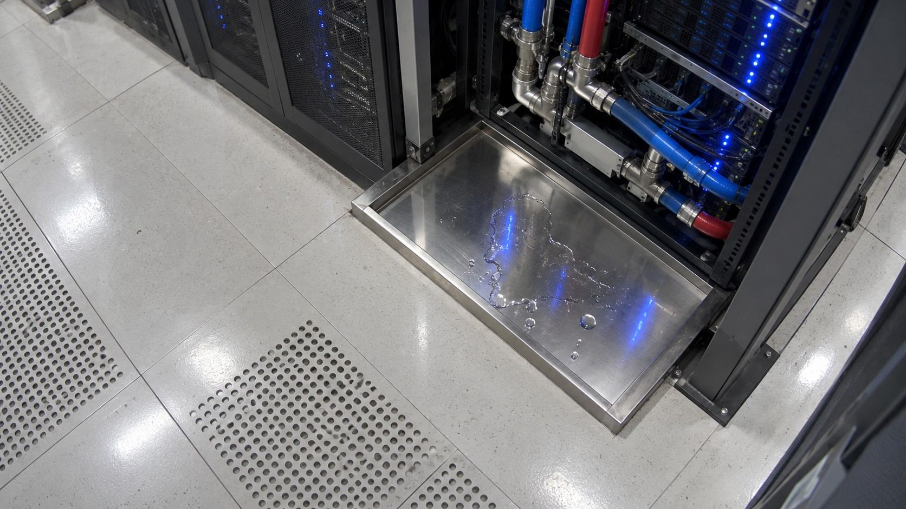

One hour in a 100 MW-class AI factory
One hot afternoon: a heat wave, a cooling loop slowly fouling, a small leak under a rack, and the grid operator asking to shed 20 MW. Every question in that hour went to the least intelligence that could answer it. This is how often each route was used.
Reproducible simulation 576 liquid-cooled racks at 140 kW, 24 cooling loops, 16:00 to 17:00. Scale follows public AI factory reference designs; every value is simulated.
Loading the simulated hour…

Below, open a smaller incident and run the routing yourself: curate the evidence, move the confidence contract, and download the decision record.
1 Curate before anything reasons
A large model could be handed the whole day. It does not need it. Deterministic steps narrow the data to evidence a person can check, and every item keeps a link back to its source records.
A restriction in the R07 cooling branch removes up to a third of its flow from 17:00.
Fault evidence kept
–
Size if sent to a model
–
JSON bytes of the raw day versus the evidence ledger. A size, not a token or cost measurement.
Conflicting evidence
–
Reproducible simulation Curation keeps everything the injected fault produced only if its rules are good. The subtle fault shows where they are not.
Evidence ledger
2 Give each decision the least intelligence that answers it
The same incident raises four questions. They are not stages of one pipeline. Each goes to the simplest route that can answer it, and the first three run here, in your browser, on the curated evidence.
Reproducible simulation Measured Answers come from the simulated scenario; timings are measured live in this browser and vary by device.
3 Escalate only when the contract says so
Every decision carries a contract: how sure the answer must be, how much risk it carries, who approves. When a model cannot meet the contract, the question moves up one route, and the reason is recorded.
Contract: which fault is this?
- Risk class: affects a running production rack
- Approver: Infrastructure Operations
- Escalate if the model's confidence is below the threshold
Move it down to see what happens when the contract is too lax.
Route 2 tries first: compact model
Route 3 answers: specialized model
Reproducible simulation
4 The output is a decision record, not a chat answer
What leaves the system is something an engineer can audit and a manager can approve: the action, the evidence, the route behind each answer, and what is still uncertain.
5 What it cost, and what we have not measured
Lean is a claim that needs numbers. Where we have them, they are here with their method. Where we do not, the gap stays visible.
| Route | Ran where | Model size | Time per call | Tokens | Cost | Energy |
|---|
Real data: steel plate faults
Measured 388 held-out plates from the public UCI dataset, loaded from the published evidence file.
Loading the published evidence…
Bars show accuracy; the outlined band is the 95% Wilson interval computed in your browser from the published predictions.
What this does not prove
- That AI was necessary, or that this model is the best simple option.
- Anything about energy, cost or CO₂.
- Performance in another factory or on the simulated cooling loop.
Open by nature. Lean by design.
Everything on this page can be regenerated, inspected and challenged. SlowAI is an independent, personal open-source initiative, not an employer programme.
Reproduce this page's numbers
git clone https://github.com/opedoussaut/slow-ai
cd slow-ai
python -m story.generator.scenario
python -m pytest storyStandard-library Python. The committed scenario file is checked against a fresh regeneration in CI.
Known limits
- The cooling loop, its faults and its models are simulated; the specialized model's near-perfect score reflects a clean simulation, not real-world accuracy.
- No frontier model has been run yet. When one is, its date, model and token count will be published.
- Energy, cost and CO₂ are not measured anywhere on this page.